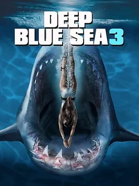

The genetics
The monsters are genetically modified bull sharks, offspring of a shark created in the experiments of the earlier films and given larger brains that make them more intelligent and more aggressive. The film's genetics is a backstory and a threat: if they breed, Richard warns, the result will be a catastrophe. The scientists and mercenaries who come to retrieve them work for Genotic Labs, described by the Moria review as a pharmaceuticals corporation, and the company is shown as willing to kill everyone to recover its asset. Richard redeems himself by joining Emma, a field biologist who studies natural sharks and whose friendship with a wild great white is set against the engineered killers. The film also links shark behaviour to climate change. None of the genetics is explained; the sources describe the film as a cheerfully ridiculous B movie.
How genetics is portrayed
- Overall portrayal of genetics
- negative Genetic modification produced intelligent killer sharks that a ruthless corporation wants back at any cost, set against a heroine who studies and protects natural sharks.
- Outcome of the genetic intervention
- negative The engineered bull sharks kill several people and the corporate attempt to recover them leads to a massacre and the destruction of the island.
- Genotic Labs (Lucas and his mercenaries)
- villain Aim: commercial (negative). The company that owns the modified sharks sends mercenaries who seize a shark, plan to kill all witnesses and mine the island to recover their asset.
- Dr. Richard Lowell
- ambivalent Aim: commercial (negative). Richard leads the corporate team recapturing the engineered sharks, warns of the danger if they breed and finally sides with Emma, dying as he jumps to join her.
The story
Marine biologist Dr. Emma Collins and her small team study the effects of climate change on great white sharks from Little Happy, a half-flooded artificial island off southern Africa. Her ex-boyfriend, Dr. Richard Lowell, arrives with a team to recapture three bull sharks, the grown pups of Bella, a shark from earlier experiments. The bull sharks kill a diver and a young local, Bahari, and Richard admits they are intelligent, genetically modified survivors that would be a catastrophe if they bred. Lucas, the leader of the mercenaries from Genotic Labs, takes over the operation, plans to kill all witnesses and escape with a captured shark, and mines the island. Richard switches to Emma's side and is killed by a shark; Emma's great white friend Sally saves her from a mercenary. Emma turns the mine on the mercenaries' boat, Shaw dies killing two sharks, Emma crushes the last one in a garbage compactor, and three survivors escape.